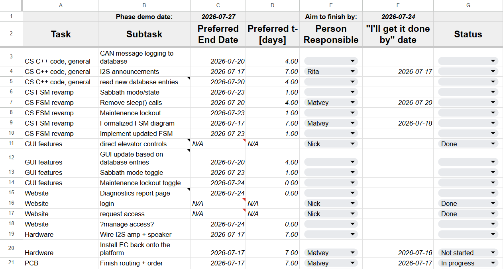

To improve communication and teamwork, I created a list of the tasks that must be completed by the end of
the phase. Nick and I can now give Rita a choice of tasks and track the claimed completion date for each
one. If a completion date passes without any reported progress, we can take over the task.

Phase 2 outstanding tasks and responsibilities table
The task list is based on the professor's latest announcement[1].
PCB Layout Session 3
Placing buttons on the rear side of the board made the overall layout and routing difficult because the
vias could interfere with the button circuitry. Therefore, I considered splitting the design into a
stack of two PCBs:
The Service PCB would contain most of the electronic components.
The I/O PCB would contain the user-facing controls and indicators, including the buttons and
7-segment display.
The two boards would connect through 2.54 mm pin headers. Configuration jumpers and 0-ohm resistors would
be placed on the rear of the Service PCB so that they remain accessible when the boards are stacked.
I reviewed the JLCPCB order configurations and found that placing two separate orders for boards smaller
than 100 × 100 mm is less expensive than ordering a single larger board.